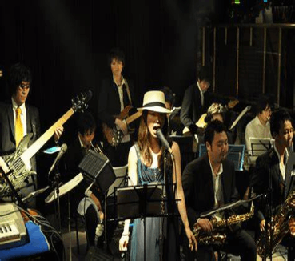

Influencia
A más de 20 años de su estreno, Cowboy Bebop es considerada una obra maestra del anime, famosa por su excepcional banda sonora, creada por Yōko Kanno y The Seatbelts. La música fusiona géneros como jazz, blues, soul, rock, funk, bossa nova y electrónica, aportando riqueza a la serie. Esta diversidad musical definió la serie y dio origen a siete álbumes aclamados. Artistas como MF DOOM y JPEGMAFIA han citado a Cowboy Bebop como una influencia clave, además, animes como Samurai Champloo, que combina hip-hop y una narrativa similar, y Kids on the Slope, centrado en el jazz, demuestran el impacto duradero de Cowboy Bebop en la música y en la evolución del anime.